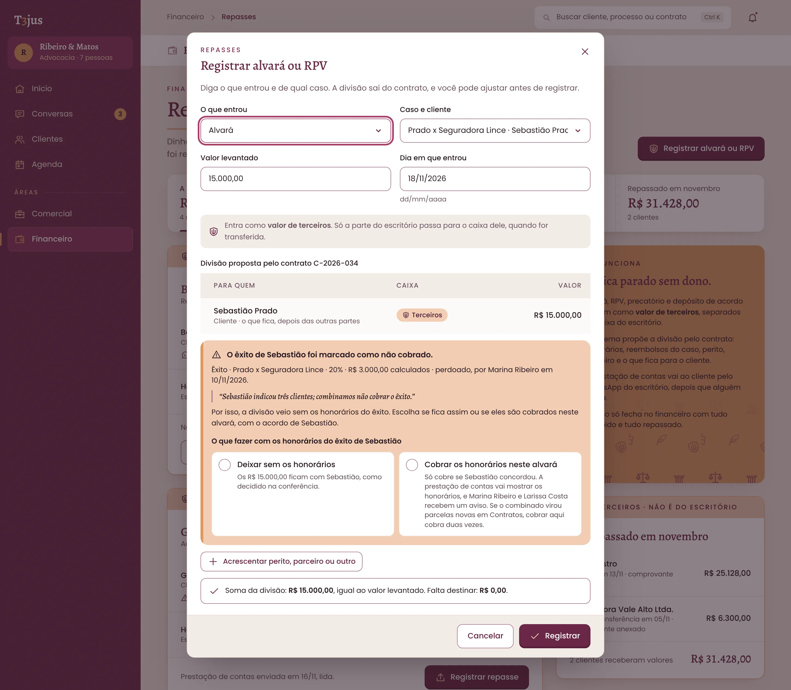
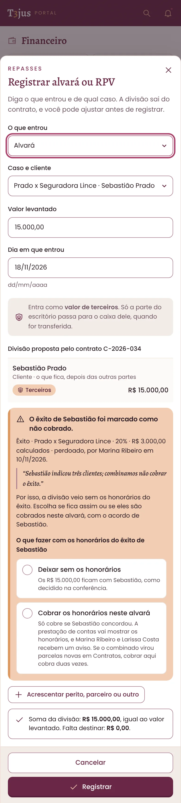

enc-proposta
A divisão vem sem os honorários: o aviso e a escolha, sem nada marcado
A divisão já vem sem a linha de honorários, e Sebastião fica com R$ 15.000,00. Abaixo da tabela, dentro do quadro “Divisão”, o aviso âmbar do eb- (quem conferiu, quando, o motivo, a explicação entre aspas) e o grupo “O que fazer com os honorários do êxito de Sebastião”, sem nada marcado. A ajuda do “Cobrar” diz quem recebe o aviso e, por ser Perdoado, lembra das parcelas novas em Contratos.